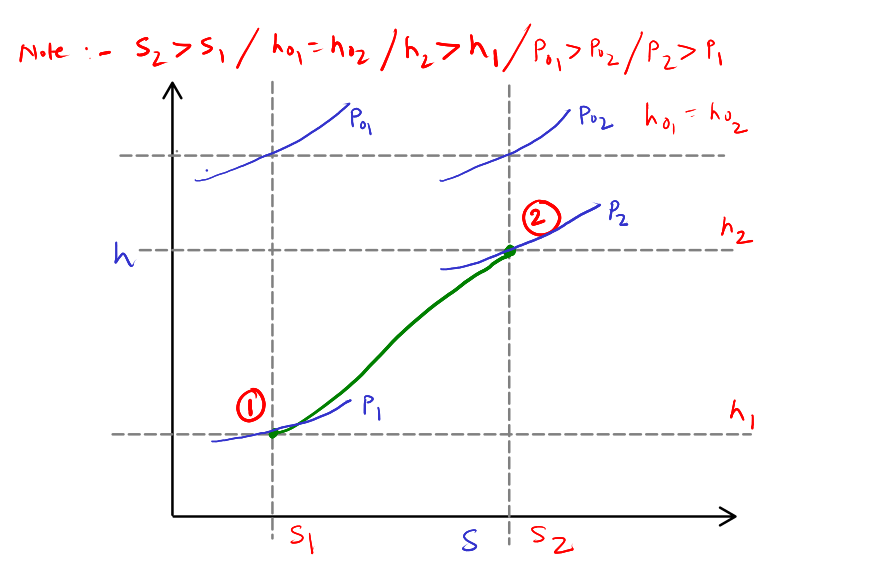
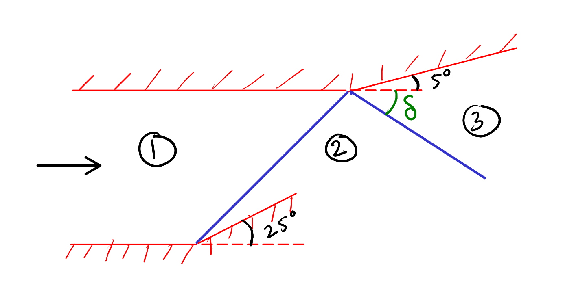
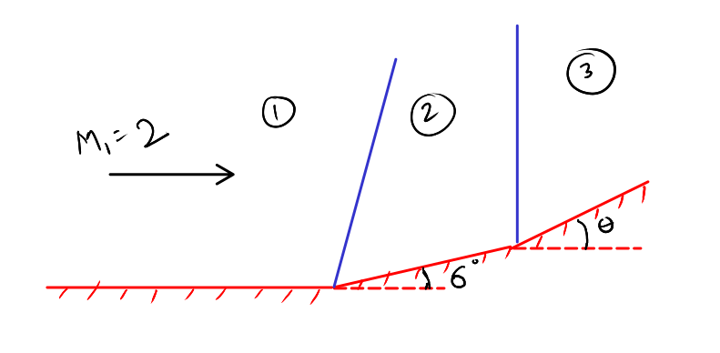

Starting from the conservation laws, derive an expression for \(\frac{u_1 - u_2}{a_1}\) is across a normal shock for a perfect gas.
Hint: Please note that \(\frac{\Delta u}{a_1}\) is available in the normal shock tables.
Derive
\[\frac{u_2}{u_1} = \frac{\rho_1}{\rho_2} = \frac{(\gamma -1)M_1^2 + 2}{(\gamma + 1)M_1^2}\]and substract \(1\) from both sides. After writing \(u_1 = M_1 a_1\), you will get
\[\frac{u_1 - u_2}{a_1} = \left(\frac{2}{\gamma + 1}\right)\left(\frac{M_1^2 -1}{M_1}\right)\]For a choked C-D nozzle, define over-expanded, fully-expanded and under-expanded flow. In each case, explain what kind of shock formation will be happen (if any).
These are standard definitions. 2 marks per definition.
Represent the normal shock wave on the Rayleigh diagram ( h-s diagram). You should mark the states 1 and 2 along with the total states \(0_1\) and \(0_2\). Clearly mark \(h_{0_1}\), \(h_{0_2}\), \(s_1\), \(s_2\), \(p_{0_1}\), \(p_{0_2}\), \(p_1\) and \(p_2\).


Given \(M_1 = 3.3\), compute \(M_3\), \(p_3 / p_1\), \(T_3 / T_1\) and \(\delta\).
M₁ = 3.3; θ₁ = 25 # Given
β₁ = (40.57 + 43.22)/2 # From oblique shock tables
M₁n = M₁*sind(β₁)
M₂n = 0.5471; p₂byp₁ = 5.48; T₂byT₁ = 1.8569 # From normal shock table
M₂ = M₂n/sind(β₁ - θ₁)
θ₂ = θ₁ - 5
β₂ = 59.21 # From oblique shock tables
M₂n2 = M₂*sind(β₂)
M₃n = 1; p₃byp₂ = 1; T₃byT₂ = 1; # From normal shock table
δ = β₂ - 5 - 20M₁n is 2.203633078325248
M₂n2 is 1.6171906844056108
M₃n is 1
M₂ is 1.88253546614397
θ₂ is 20
δ is 34.21
Determine the value of \(\theta\) up to which the second shock will remain attached. The upstream Mach number is \(2\) and the first corner has an angle of \(6\) degrees.

M₁ = 2; θ₁ = 6 # Given
β₁ = 35.24 # From oblique shock tables
M₁n = M₁*sind(β₁)
M₂n = 0.72*0.8820 + 0.25*0.8682 # Linear extrapolation from normal shock table
M₂ = M₂n/sind(β₁ - θ₁)M₂ is 1.7444097350916303
From oblique shock tables, θmax = 16. Hence, θ has to be less than 16 degrees.
Can a pitot static tube be used for measuring the free stream velocity in a supersonic flow? Explain.
This is what is called a lollipop, an open ended question. Ease to score but reveals a lot of about the level of understanding of a student.
The main thing here is to identify the fact that one has to add a correction for shocks. Mostly bow but may be attached oblique shock. If it is bow, in the vicinity of the pitot tube, normal shock correction can be a good starting point. However, based on the geometry of the pitot tube, more accurate correction factors can be derived based on more accurate calculations at various operating conditions.
No grading queries will be entertained for this question. My grading will be final.